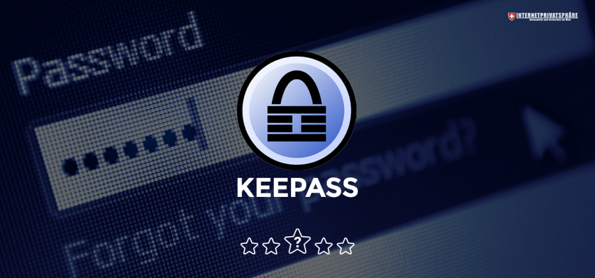

30 mai – 30 juin 2023
Stage première année
de BTS SIO
Mon stage pour ma première année a été fait à la mairie de la commune de Villeneuve-Tolosane en service informatique. J’ai réalisé un projet qui consiste à transférer les mots de passes de certains navigateurs internet sur KeePass. J’ai réalisé ce projet en Python, C# et VBS (Visual Basic Script). J’ai également fais un peu de réseau.
8 janvier – 9 février 2024
Stage deuxième année
de BTS SIO

Mon stage pour ma deuxième année a été fait encore une fois à la mairie de la commune de Villeneuve-Tolosane en service informatique. Cela m’a permis de continuer le projet du stage de première année et ainsi de le finaliser. J’ai donc rajouter une sécurisation grâce à un web socket client/serveur pour la partie connexion. Ce script a été fait en C# sans librairie et sera exécuter en boucle sur un vrai serveur que j’ai installer avec mon tuteur de stage durant le stage.